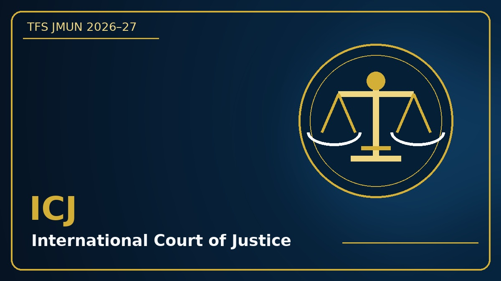
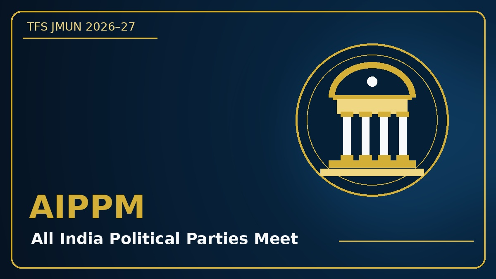
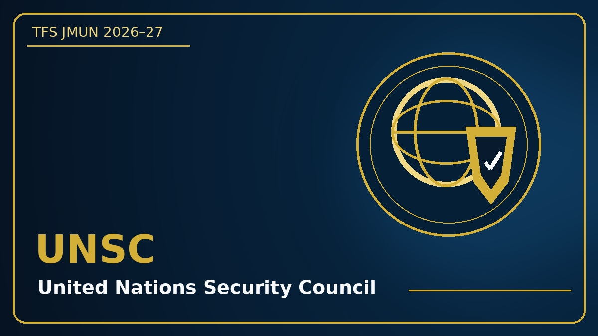
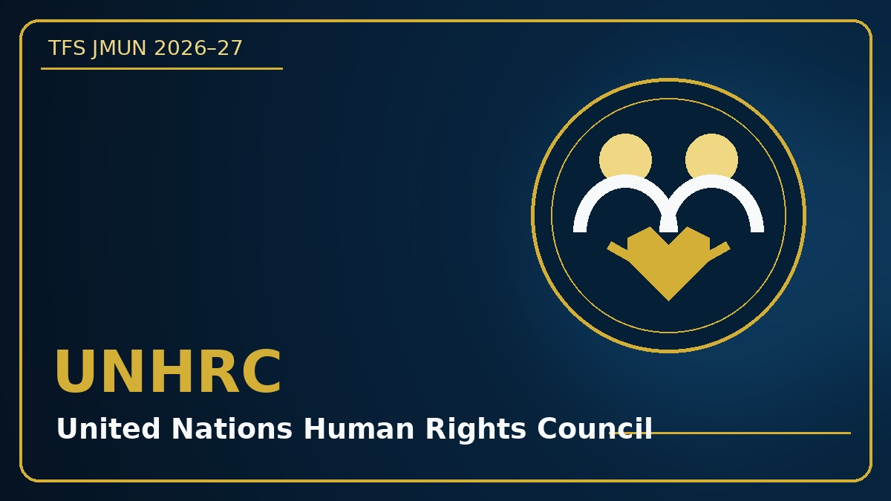
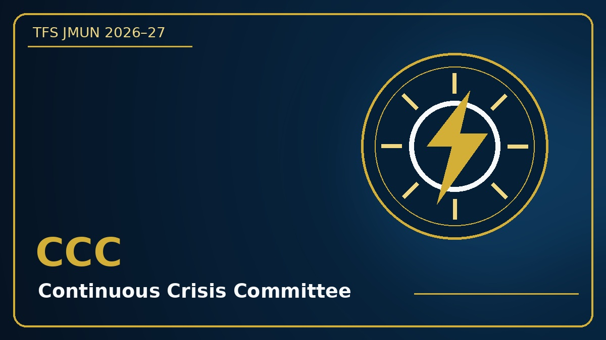
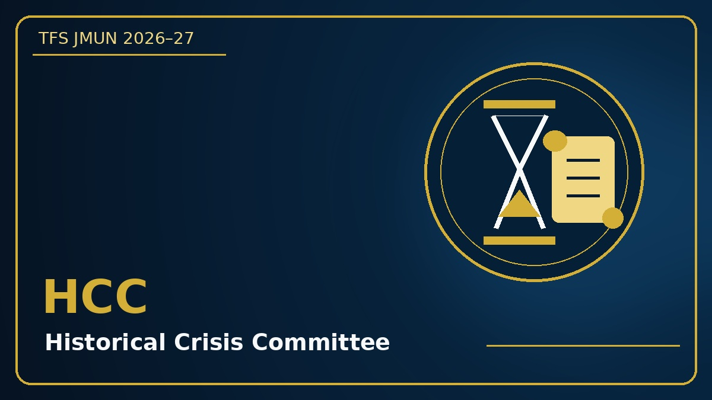
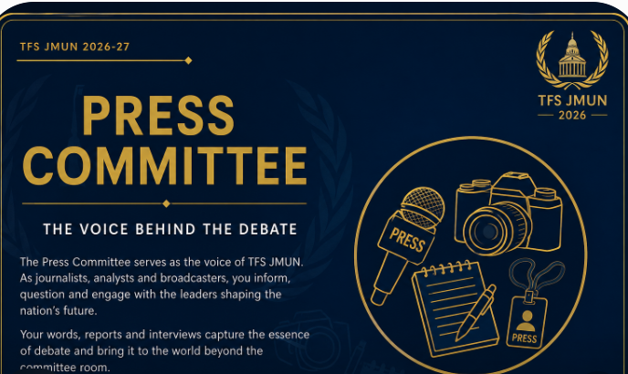
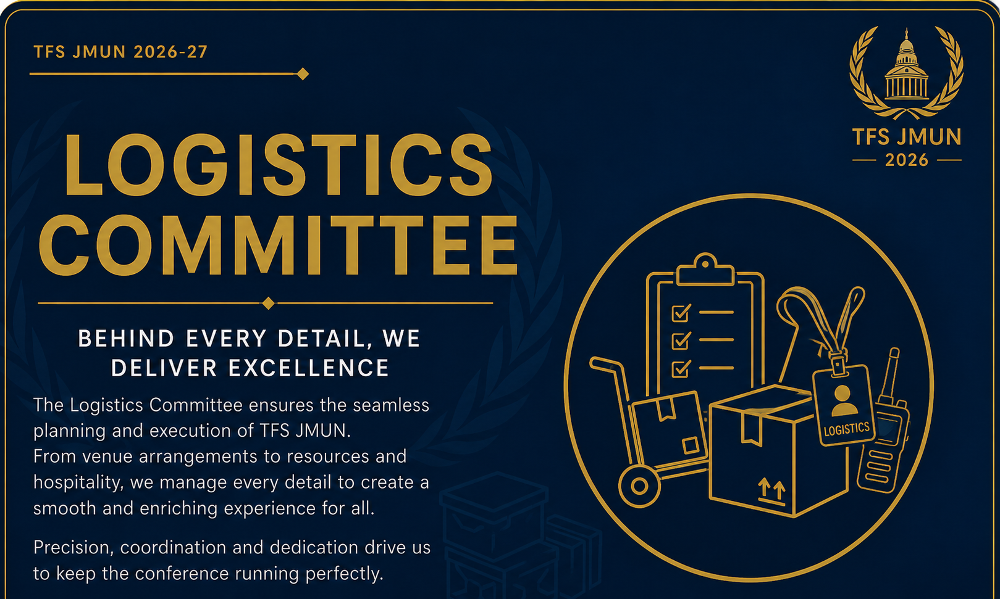

Committees
Explore the six committees of TFS JMUN 2026-27. Each committee offers delegates an opportunity to debate important issues, negotiate with other representatives and develop practical solutions.
1. International Court of Justice — ICJ

About the Committee
The International Court of Justice is the principal judicial organ of the United Nations. Delegates will examine legal disputes between states, analyse evidence, present arguments and apply principles of international law.
Agenda
Malaysia vs Singapore (Pedra Branca Island)
Background Guide
2. All India Political Parties Meet — AIPPM

About the Committee
The All India Political Parties Meet brings together representatives of Indian political parties to deliberate on major national issues. Delegates must defend their party's position while negotiating workable political solutions.
Agenda
Deliberation on implementation of UCC
Background Guide
3. United Nations Security Council — UNSC

About the Committee
The United Nations Security Council is responsible for maintaining international peace and security. Delegates will respond to global threats, negotiate resolutions and consider diplomatic, humanitarian and security measures.
Agenda
Israel - Palestine War
Background Guide
4. United Nations Human Rights Council — UNHRC

About the Committee
The United Nations Human Rights Council works to promote and protect human rights around the world. Delegates will discuss violations, examine their causes and propose effective and humane international responses.
Agenda
Protecting children in war zones
Background Guide
5. Continuous Crisis Committee — CCC

About the Committee
The Continuous Crisis Committee is a fast-paced committee in which the situation develops throughout the conference. Delegates must react to crisis updates, write directives, make strategic decisions and adapt to unexpected developments.
Agenda
South China Sea Escalation
Background Guide
6. Historical Crisis Committee — HCC

About the Committee
The Historical Crisis Committee places delegates in an important moment from history. Delegates must act using only the information available at that point while responding to rapidly changing political, military and diplomatic developments.
Agenda
Vienna Congress after the fall of Napoleon (1 Nov 1814)
Background Guide
7. Press Corps

About the Committee
The Press Corps serves as the official voice of the conference, projecting the resolutions and decisions of the United Nations to the world. Delegates must be very observant of the developments, and be objective and confident in their articles, satirical pieces, and interrogations.
Agenda
Observe, question, and report the proceedings.
Background Guide
8. Logistics

About the Committee
Agenda
The Logistics Team ensures the smooth execution of the conference by managing venues, materials, and delegate support. They work behind the scenes to keep every committee running efficiently.